Your game, new look, one app
ආයුබෝවන් ඉෂිනි සහ දිලිනි! 👋
Your ICT game for grades 6-9 has a new design. All your lessons, questions and answers stay exactly as you wrote them. The 9 separate files become one app that switches between සිංහල and English. Here is how it will look.
1 · Stays the same
- All 86 activities and every answer, across 4 grades
- Your game types, the music, the robot friend
- The Scratch builder and all 14 puzzles
2 · What's new
- One design for all 4 grades, each with its own colour
- One app with a සිංහල / English switch
- A class leaderboard with nicknames
- Works on phones and old lab PCs, even offline
3 · What happens next
- Pasindu builds the real game from this design
- Then it goes online, so any student can open it with a link
- If you'd like any change to the look, just tell Pasindu
Everything below shows the design in detail: 1 · the screens, 2 · colours and fonts, 3 · your version next to the new one.
Six screens from the new design
Drawn in Open Design from your real lessons. Each screen has a number (S1-S6), handy if you want to point at one.
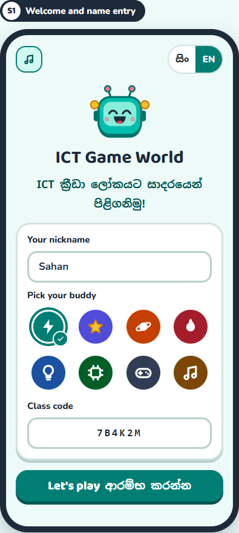
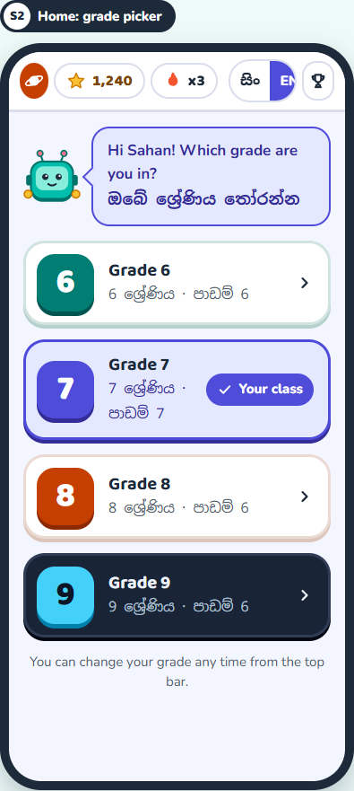
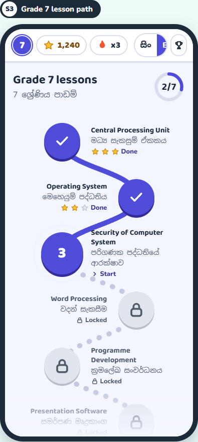
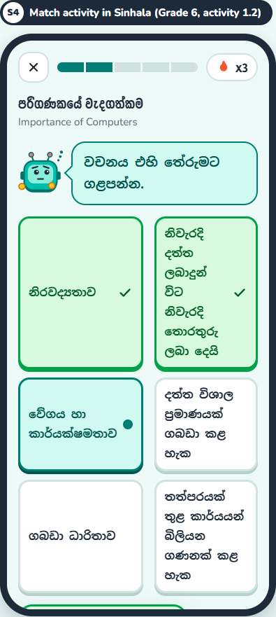
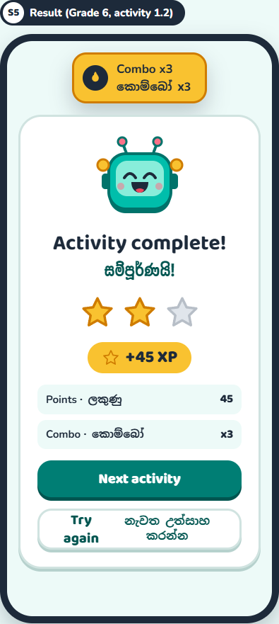
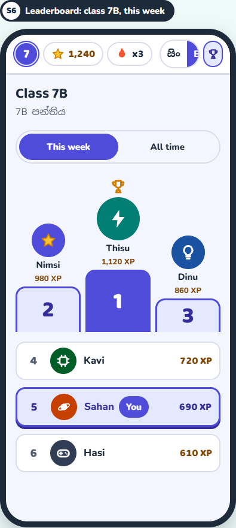
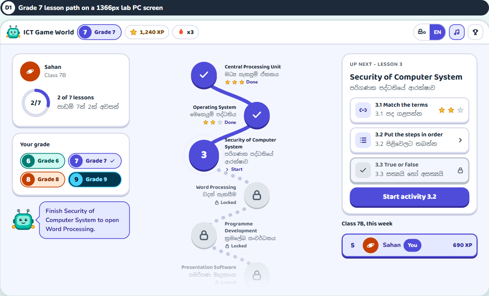
The design system in one look
A design system is the set of rules every screen follows, so all four grades look like one game.
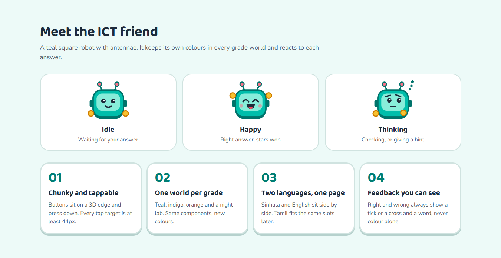
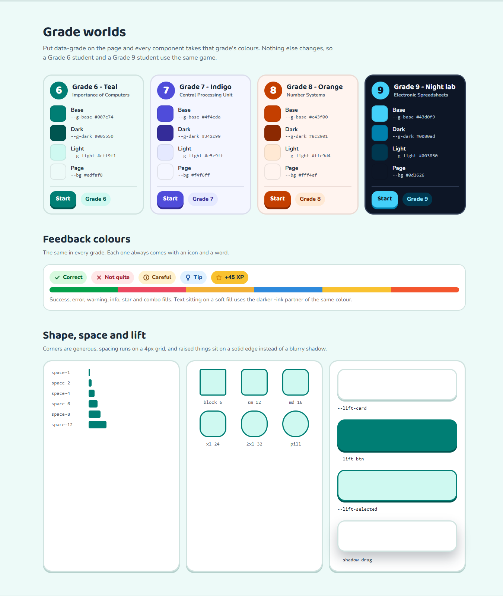
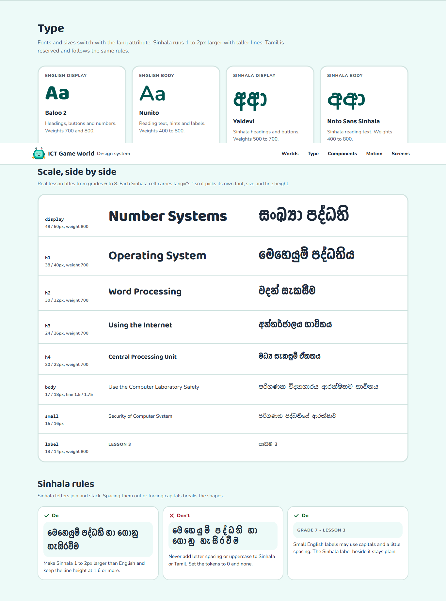
Your version next to the new one
Home screen
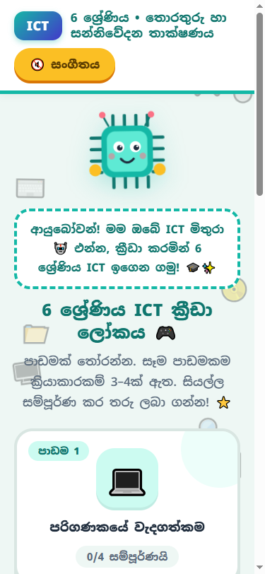
An activity on a phone
Before: on phones, your flowchart-symbol match puts all 15 cards in one long column, so pairing means a lot of scrolling. After: the new match layout keeps both columns side by side on a phone. The symbol match gets the same treatment in the build.
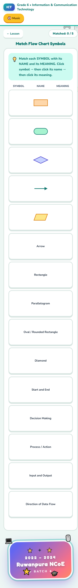
On a lab PC
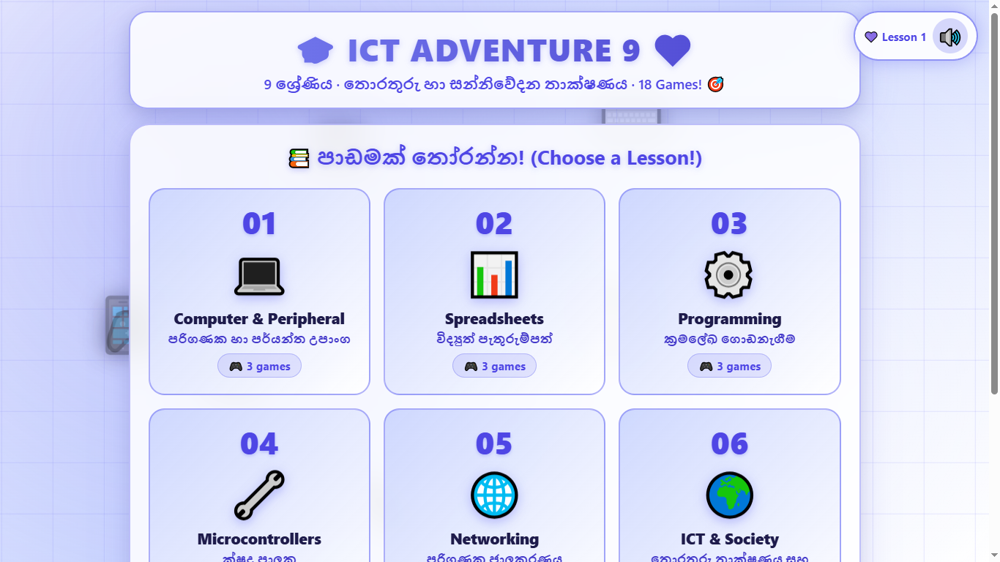
ICT Game World · Made by Ishini Premachandra & Dilini Wijesooriya